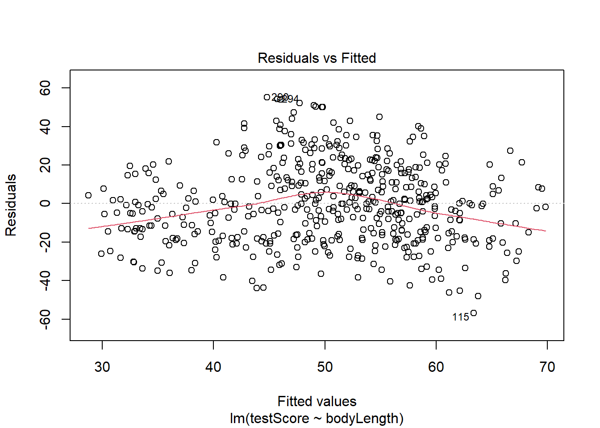
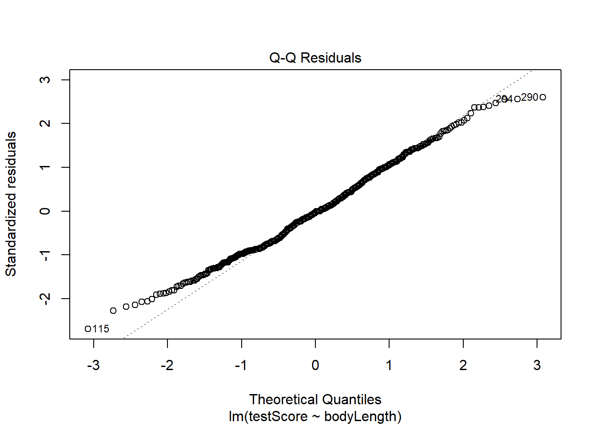
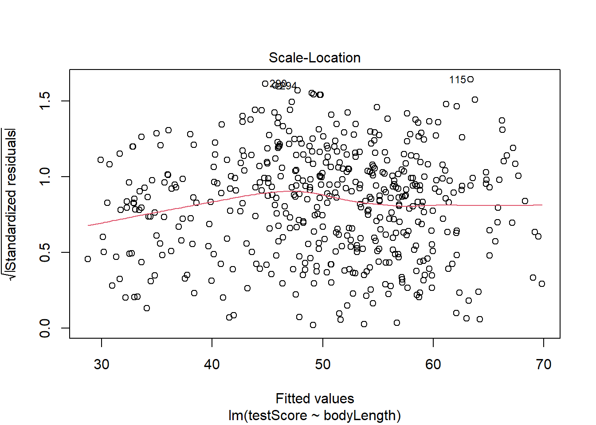
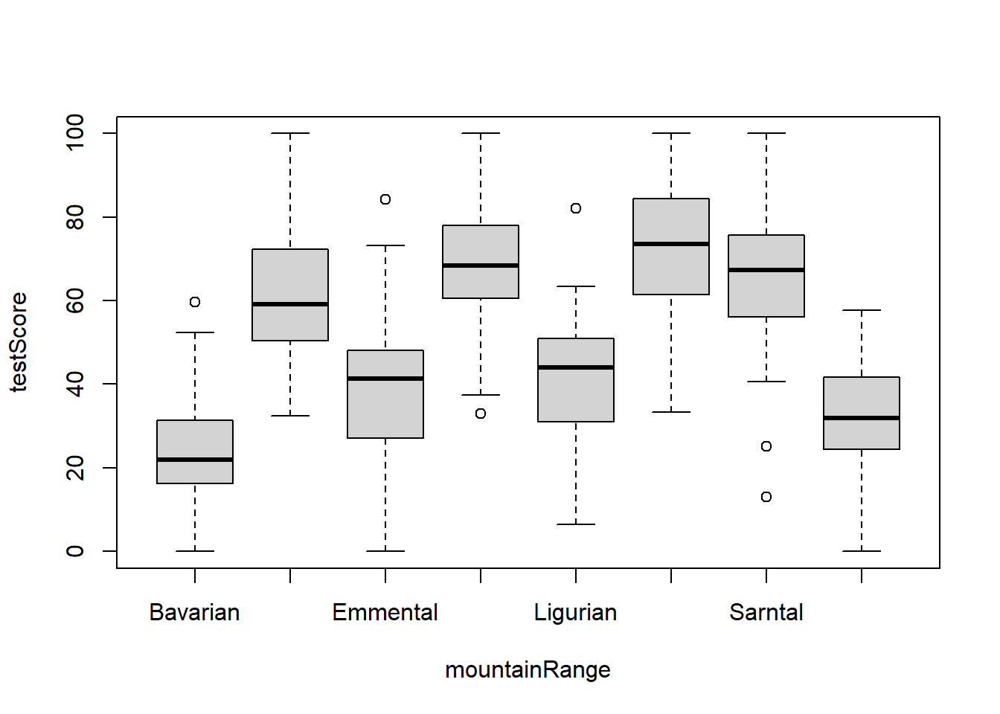
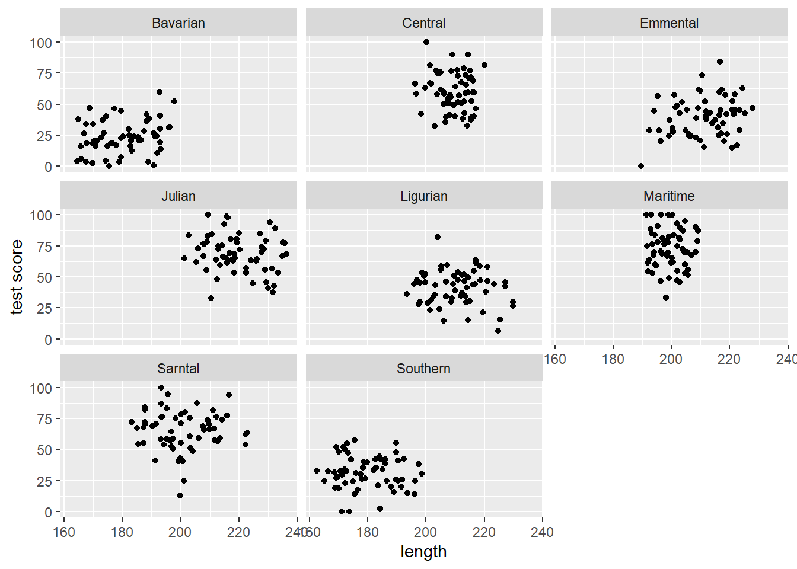
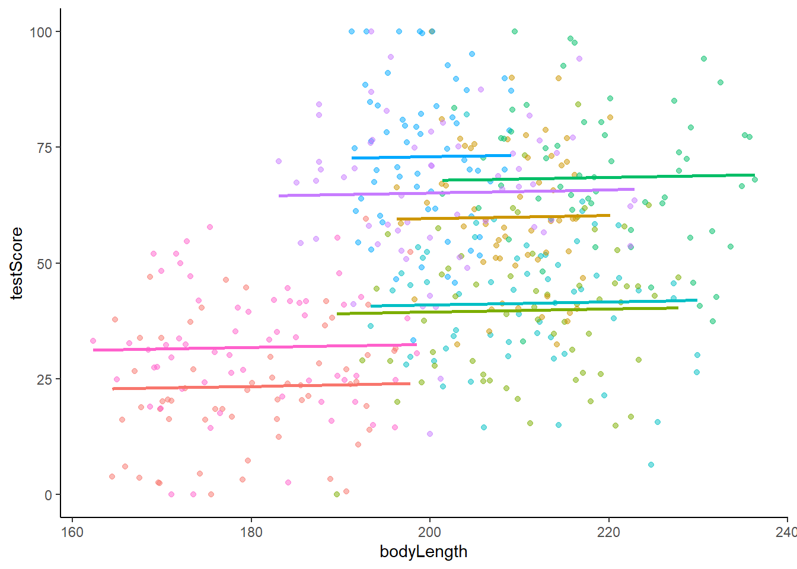
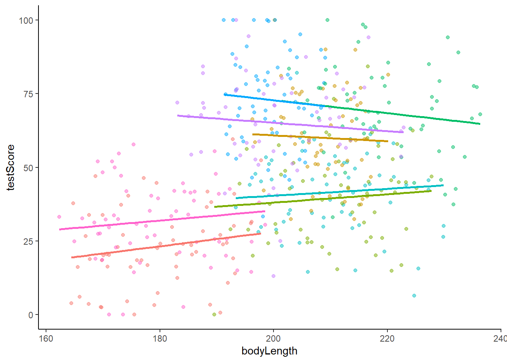
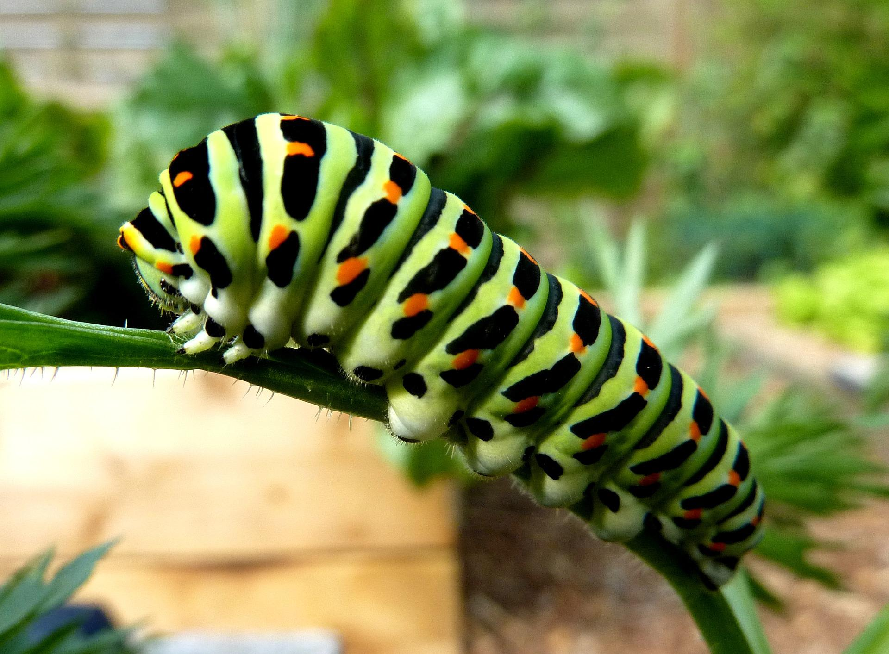
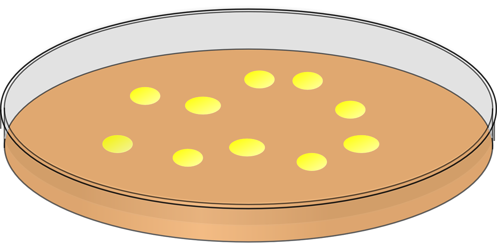

We will use a fictional study system - dragons! Click this link to the dragon data and save it in your data file in your R project.
Imagine we went to eight mountain ranges (mountainRange) and collected data on the intelligence (testScore) and size (bodyLength) of 480 dragons. We want to know if size affects their intelligence since we want intelligent dragons that we can train but that aren’t too big and scary!
One way to analyse this data would be to fit a linear model.
Fit the model with testScore as the response and bodyLength as the predictor and have a look at the output:
basic.lm <-lm(testScore ~ bodyLength, data = dragons)summary(basic.lm)
Call:
lm(formula = testScore ~ bodyLength, data = dragons)
Residuals:
Min 1Q Median 3Q Max
-56.962 -16.411 -0.783 15.193 55.200
Coefficients:
Estimate Std. Error t value Pr(>|t|)
(Intercept) -61.31783 12.06694 -5.081 5.38e-07 ***
bodyLength 0.55487 0.05975 9.287 < 2e-16 ***
---
Signif. codes: 0 '***' 0.001 '**' 0.01 '*' 0.05 '.' 0.1 ' ' 1
Residual standard error: 21.2 on 478 degrees of freedom
Multiple R-squared: 0.1529, Adjusted R-squared: 0.1511
F-statistic: 86.25 on 1 and 478 DF, p-value: < 2.2e-16
View the ‘Code Explained’ if using lm is relatively new to you.
Code Explained
basic.lm is the name we gave to the model object. We could have chosen to name it anything.
lm() is the function that runs the linear model
testScore is the name of our variable that we want to be the response in the model.
The tidle ~ separates the response and predictors in the lm code.
bodyLength is the name of the column of data that we want as the predictor in the model
data = is an argument in the lm function
dragons is the name of the dataset that we want R to use.
Challenge
Write out how you could report the output from the summary. (You may want to look back at the Linear Models lesson.)
Answer
Points you could take from the output include:
* The coefficient estimate for bodyLength suggests that the model predicts testScore to increase by 0.55 for an increase of 1 in bodyLength.
* The coefficient - standard error for bodyLength suggest the testScore can vary by 0.06.
* The p value under Pr(>|t|) is significant indicating we might reject the null hypothesis that there is no relationship between bodyLength and testScore.
* R2 is 0.1529 suggesting that 15.29% of the variance in testScore is explained by bodyLength.
Let’s plot the data with ggplot2:
library(tidyverse) # load the package containing both ggplot2 and dplyr
Okay, both the linear model and the plot, suggest bigger dragons do better in our intelligence test. From our knowledge of dragons, that seems a bit odd: size shouldn’t really affect the test scores.
But are the assumptions met?
The plot above and below suggest we roughly meet the assumption of linearity.
plot(basic.lm, which =1) # This is not perfect so we'd need to keep this in mind. For your own data be careful:the bigger the sample size, the less of a trend you'd expect to see.

Next, check the assumption that the residuals are normal:
plot(basic.lm, which =2) # some deviations at the ends but this is generally fine

Then check the assumption of homoscedasticity (equal variance of residuals):
plot(basic.lm, which =3) # a bit off but again doesn't look too bad

But another assumption of a linear model is independent observations.
This brings us to…
Why use a mixed model
Consider the description of the dragon study again (repeated below).
Imagine we went to eight mountain ranges (mountainRange) and collected data on the intelligence (testScore) and size (bodyLength) of 480 dragons.
Challenge
What is it that may not be right about analysing the data using a lm. Type your thoughts in your R script.
Answer
The analysis has not considered that there could be differences in the dragons among the eight different mountain ranges.
The dragons can be grouped by mountain range. Therefore, the dragons (and data) are not independent.
It’s possible that the dragons from within each mountain range are more similar to each other than the dragons from different mountain ranges.
Have a look at a boxplot of the data to see if this is true:
boxplot(testScore ~ mountainRange, data = dragons) # Looks like something is going on here. The median test score for different mountain ranges is different.

We could also create a scatterplot and colour points by mountain range:
From the above plots, it looks like our mountain ranges vary both in the dragon body length AND in their test scores. This confirms that our observations from within each of the ranges aren’t independent. We can’t ignore that: it could lead to a completely erroneous conclusion!
So what do we do?
We could run eight separate analyses and fit a regression for each of the mountain ranges.
Lets have a quick look at the data split by mountain range. We use the facet_wrap() to do that:
(split_plot <-ggplot(aes(bodyLength, testScore), data = dragons) +geom_point() +facet_wrap(~ mountainRange) +# create a facet for each mountain rangexlab("length") +ylab("test score"))

Doing eight analyses increases our chance of a Type 1 error. It also decreases the sample size from 480 dragons to 60. Not ideal!
We want to use all the data, but control for the data coming from different mountain ranges. We are not interested in quantifying test scores for each specific mountain range. This means we could use mountainRange as a random effect in a mixed model.
The explanatory variable bodyLength will be the fixed effect in the mixed model.
Running a mixed model
Mixed models are run using the lmer() (linear mixed effect regression) function in the package lme4.
Library load the package ensuring it is installed first:
library(lme4)
A random effect is included in the model using the code (1|mountainRange):
mixed.lmer <-lmer(testScore ~ bodyLength + (1|mountainRange), data = dragons)summary(mixed.lmer)
Linear mixed model fit by REML ['lmerMod']
Formula: testScore ~ bodyLength + (1 | mountainRange)
Data: dragons
REML criterion at convergence: 3991.2
Scaled residuals:
Min 1Q Median 3Q Max
-3.4815 -0.6513 0.0066 0.6685 2.9583
Random effects:
Groups Name Variance Std.Dev.
mountainRange (Intercept) 339.7 18.43
Residual 223.8 14.96
Number of obs: 480, groups: mountainRange, 8
Fixed effects:
Estimate Std. Error t value
(Intercept) 43.70938 17.13489 2.551
bodyLength 0.03316 0.07865 0.422
Correlation of Fixed Effects:
(Intr)
bodyLength -0.924
Interpreting mixed model output
There are no p values in the output. For mixed models, it is best to use other ways to determine if bodyLength has an effect on testScore.
Estimate
In the Fixed effects section of the output, look at the Estimate for bodyLength.
Estimate Std. Error t value
(Intercept) 43.70938024 17.13488692 2.5508998
bodyLength 0.03316496 0.07864659 0.4216961
Notice that the Std. Error suggests the estimate might be 0 for bodyLength. That means that the effect (think of effect as the slope of the fitted line in a scatterplot) might be no different to 0. In other words, there is no effect.
Likelihood ratio test
We could alternatively compare our model to a reduced model that does not contain our fixed effect bodyLength. We compare the two models in a likelihood ratio test using the function anova().
Fit a full model and a reduced model:
full.lmer <-lmer(testScore ~ bodyLength + (1|mountainRange), data = dragons, REML =FALSE)reduced.lmer <-lmer(testScore ~1+ (1|mountainRange), data = dragons, REML =FALSE)
Notice the reduced model has 1 instead of bodyLength.
REML= Explained
In our previous model we skipped setting REML - we just left it as default (i.e. REML=TRUE). This means the model used the less biased restricted maximum likelihood method to come up with the estimates. You should report estimates from this model.
However, when you compare models you should use REML=FALSE so the model uses maximum likelihood which doesn’t rely on the coefficients of the fixed effects which are different (ie there is no fixed effect in the reduced model).
Now compare the full and reduced model using anova():
The p value under Pr(>Chisq) is not significant, there is no difference between the models. This means having bodyLength in the model explains none of the variance in the testScore. bodyLength has no effect.
AIC values
You can also assess models using AIC values. The model with the lower AIC value will fit the data better. Models with similar values are no different.
AIC values were given in the anova() output above or use the AICc() function in the AICcmodavg package:
library(AICcmodavg)AICc(reduced.lmer)
[1] 3999.736
AICc(full.lmer)
[1] 4001.562
Generally, if models are within 2 AICc units of each other they are very similar. Within 5 units they are quite similar, over 10 units difference and you can probably be happy with the model with lower AICc. As with p-values though, there is no “hard line” that’s always correct.
So we can conclude that body size has no effect on dragon intelligence and therefore we will be able to train the small ones and not use the big scary ones!
If we had not accounted for mountain range in a mixed model we may have came to the wrong conclusion.
Random slope mixed model
The mixed model we ran for the dragon data…
mixed.lmer <-lmer(testScore ~ bodyLength + (1|mountainRange), data = dragons)
…was a random intercept model.
Here’s the graph to accompany that.

Notice that the different coloured lines for each mountain range would have different intercepts but the same slope as each other. (The intercept is the point where a line crosses the y axis if it were that long.)
We could have run this mixed model instead…
mixed.ranslope <-lmer(testScore ~ bodyLength + (1+ bodyLength|mountainRange), data = dragons)
which is a random slope model.
Here’s the corresponding graph

Notice the lines for each mountain range have different intercepts AND slopes.
Therefore, if your exploration of the data or understanding of the study system suggests that the relationship in each group of the random effect (i.e. in each mountainRange) is different, then use a random slope mixed model.
Challenge
Take some time to do an internet search for another definition of the difference between random intercept and random slope mixed models. Write this definition in your own words in your script.
Identifying when a mixed model is needed
There are lots of available guides to help you run mixed models in R.
However, knowing when there is a random effect and therefore when a mixed model might be needed is more difficult.
Take your time to imagine each of the studies below, identifying the variables that is the random effect in each one and writing the code to run a mixed model. For example the code for the dragons was:
mixed.lmer <-lmer(testScore ~ bodyLength + (1|mountainRange), data = dragons)
The following check list and information might help you.
Barley yield example
The effect of variety and type of nitrogen fertiliser fertType on the yield of barley plants, was tested in a field trial. The plants were grown in 20 different areas of the field called area, that were likely to vary in soil and water qualities that affected yield. The data was called barley
Caterpillar example

We want to know if development time can predict the weight of caterpillars. There may be genetic influences on weight too. We can only get 10 caterpillars from each female butterfly so use 14 females. For each of the 140 caterpillars, we note down which 1 to 14 female butterfly laid it, the development time devTime in hours and weight wgt in mg and call the dataset butterflies.
Petri dish example

The effect of two bacterial inhibitors inhib on bacterial growth is tested by growing 10 spots of bacteria per 20 petri dishes dish. Bacterial growth seemed to vary among the petri dishes. Data was called bacteria.
# The random effect is `dish` as there are several bacterial growth per dish so they can be grouped according to what dish they are are in which might have an affect on growth.model <-lmer(growth ~ inhib +(1|dish), data = bacteria)